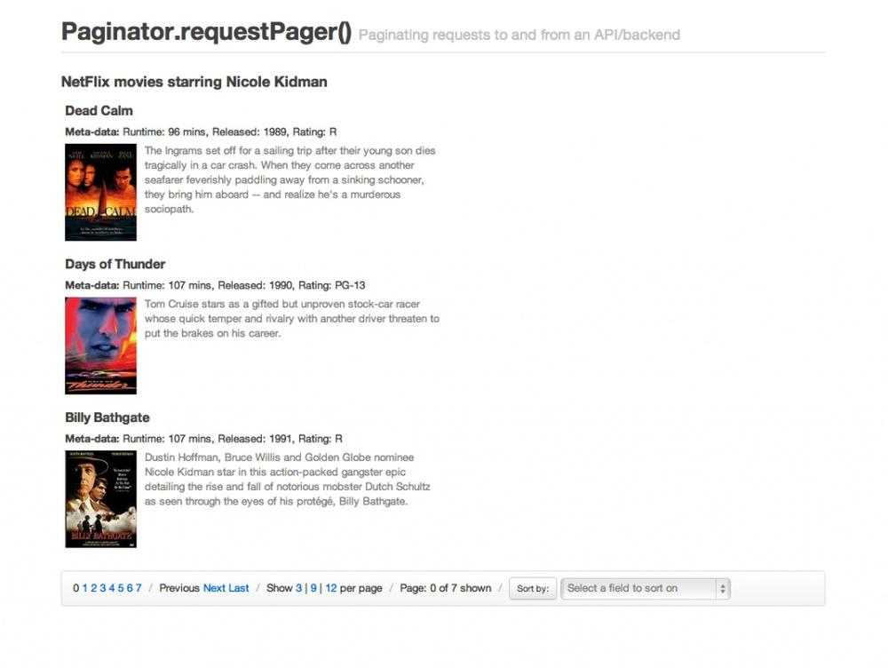
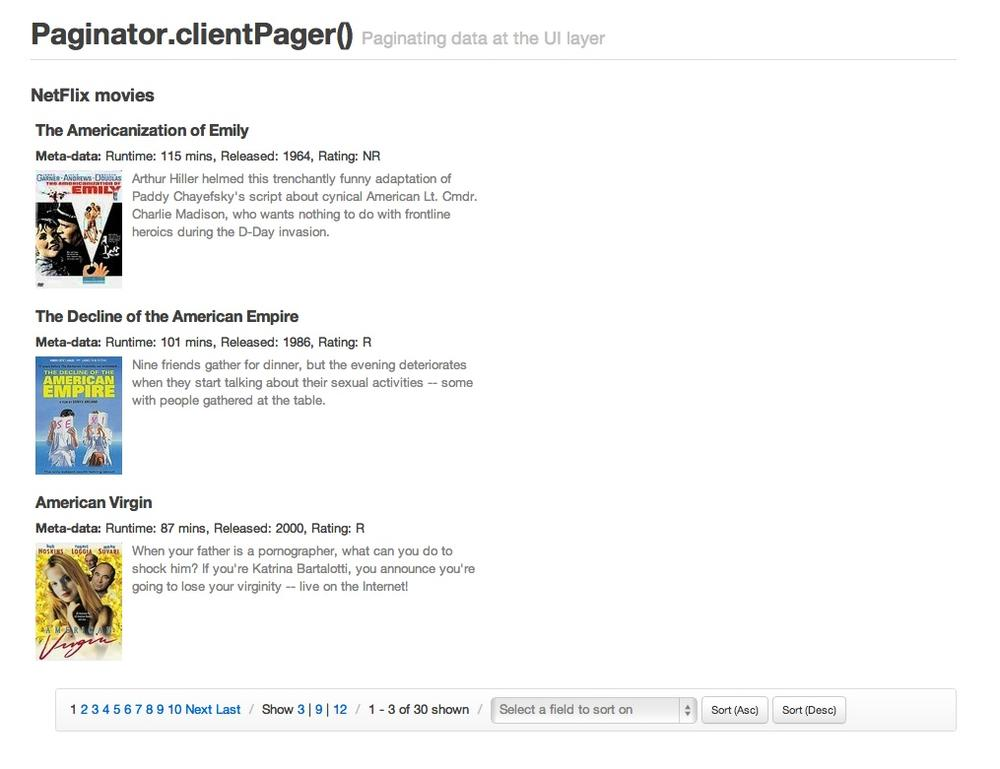
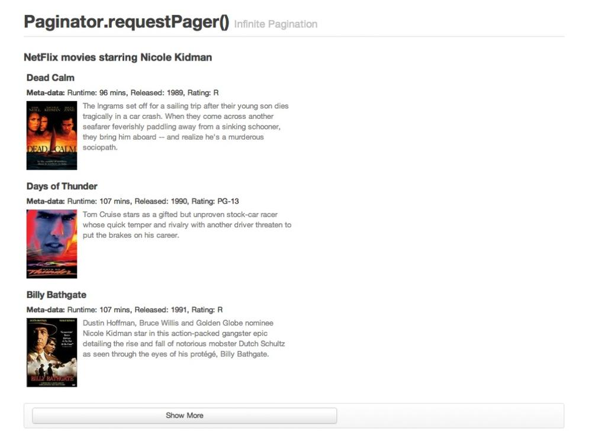

{% include JB/setup %}
{% raw %}
<div>
<div class="book" title="Live Examples"><div class="book"><div class="book"><div class="book"><h1 class="title2"><a id="live-examples" class="calibre1"></a>Live Examples</h1></div></div></div><p class="calibre6">
      Live previews of both pagination components using the Netflix API
      can be found below. Download the tarball or fork the repository to
      experiment with these examples further.
    </p><p class="calibre6">
      Demo 1:
      <a class="ulink" href="http://addyosmani.github.com/backbone.paginator/examples/netflix-request-paging/index.html">Backbone.Paginator.requestPager()</a>
    </p><div class="book"><div class="informalfigure"><div class="book"></div></div></div><p class="calibre6">
      Demo 2:
      <a class="ulink" href="http://addyosmani.github.com/backbone.paginator/examples/netflix-client-paging/index.html">Backbone.Paginator.clientPager()</a>
    </p><div class="book"><div class="informalfigure"><div class="book"></div></div></div><p class="calibre6">
      Demo 3:
      <a class="ulink" href="http://addyosmani.github.com/backbone.paginator/examples/netflix-infinite-paging/index.html">Infinite
      Pagination (Backbone.Paginator.requestPager())</a>
    </p><div class="book"><div class="informalfigure"><div class="book"></div></div></div></div></div>

{% endraw %}

